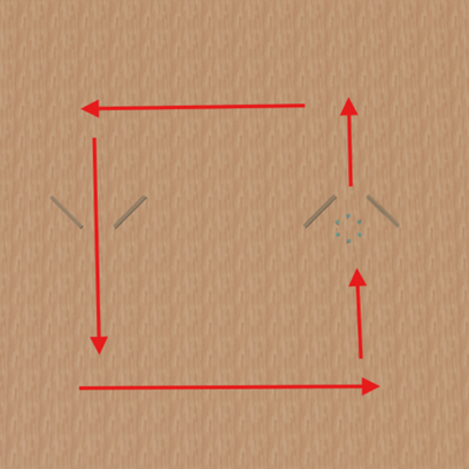
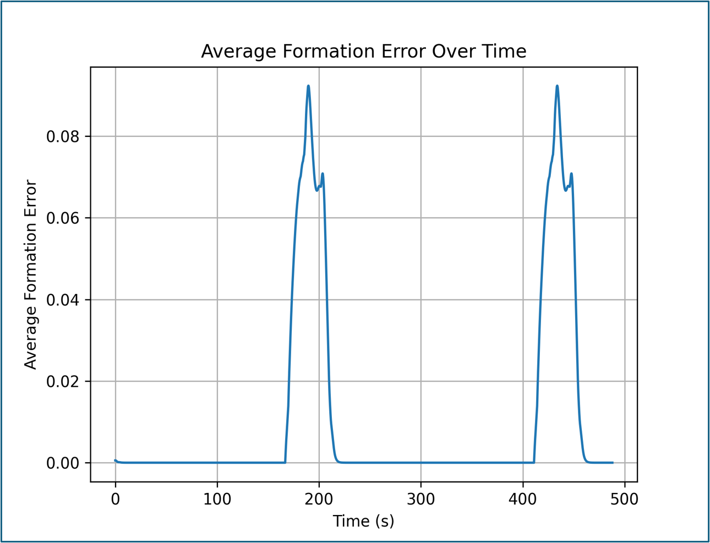
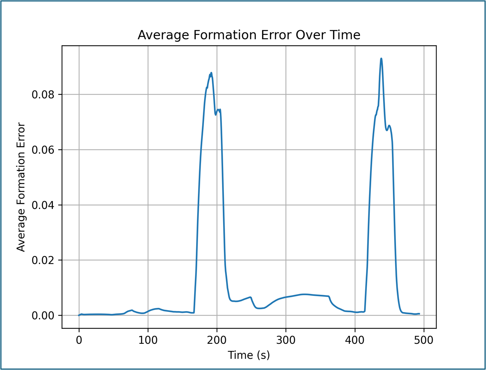

Multi-Robot Systems · Graph Neural Networks · Imitation Learning
GNN for Flocking Control in Multi-Robot Systems
Can a graph neural network learn to coordinate a robot flock from the behavior of a classical controller? This project trains a graph-based policy to imitate six-robot formation and waypoint navigation, then evaluates how closely it matches the expert.
Approach
The experiment used six E-puck robots in a Webots arena with a square waypoint route and narrow obstacle passages. A classical Laplacian-based controller served as the expert policy, combining formation maintenance, waypoint navigation, and artificial-potential-field obstacle avoidance.
A global supervisor recorded robot states and expert control commands to build graph training examples. Each robot was represented as a node, with neighbor connections and features describing position, waypoints, obstacles, and formation. The GNN used message passing to predict a two-dimensional control vector for each robot and was deployed back into Webots.

Controller Demos
Both controllers were tested in the same simulated navigation task.
Results
The learned controller achieved similar average and peak formation error, with a comparable cycle time. Obstacle avoidance was weaker: the GNN had three collisions where the classical controller had none.
| Metric | Classical | GNN |
|---|---|---|
| Average formation error | 0.012 | 0.013 |
| Peak formation error | 0.092 | 0.092 |
| Cycle completion time | 488 s | 493 s |
| Collisions | 0 | 3 |


The GNN closely reproduced the expert's overall flocking behavior in this test, but formation similarity did not translate into collision-free obstacle navigation.
Limitations & Next Steps
The imitation-learning dataset contained approximately 4,000 samples from one arena and a repeated trajectory, limiting the diversity of demonstrated behavior. Evaluation was confined to six simulated robots; generalization to other swarm sizes and physical robots was not tested.
Next steps include collecting more varied trajectories and obstacle interactions, improving obstacle-related graph features, and exploring reward-based training beyond pure imitation.
Contributions
Christian Marowski: GNN architecture, model implementation and Webots deployment, and data collection. Lucas Herbst: classical Laplacian controller and Webots environment setup.